200 images
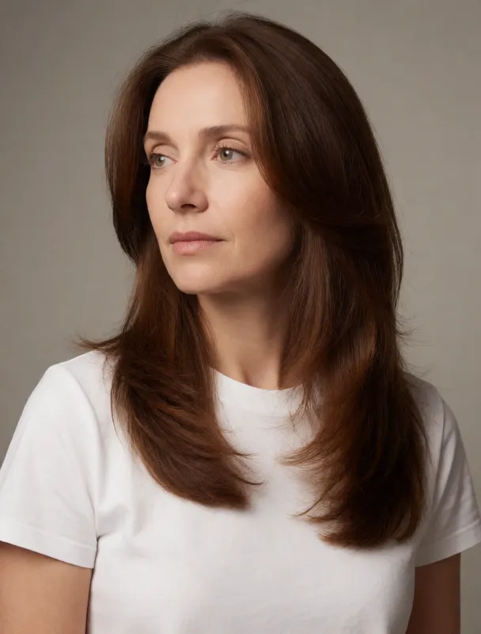
krea 2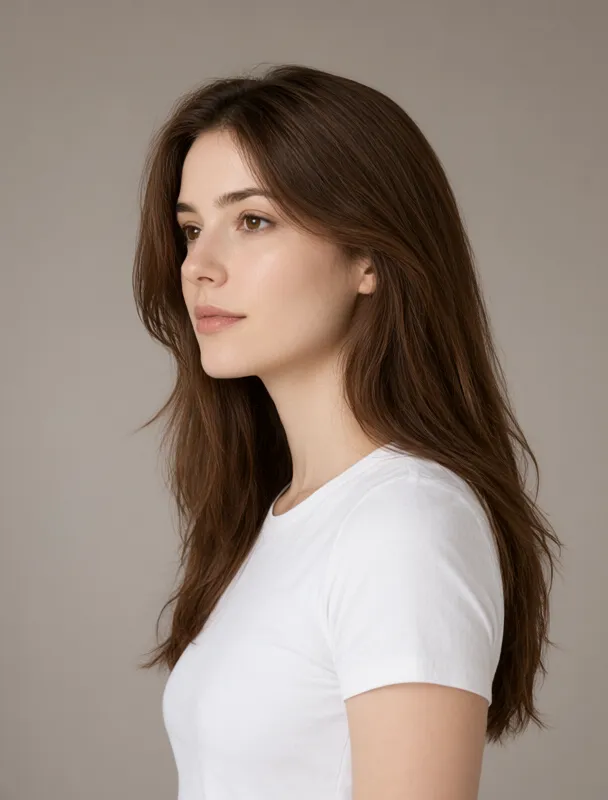
qwen image 2.1a full color studio portrait photograph in three-quarter view, framed from the shoulders up, lit by a soft diffused key light against a plain warm gray backdrop. the subject is a woman of about twenty five. she has porcelain skin. her hair is chestnut brown, long blowout layers. she wears a plain white crew-neck t-shirt. she is turned three quarters toward the left side of the frame and gazes off to the left side of the frame, away from the camera.
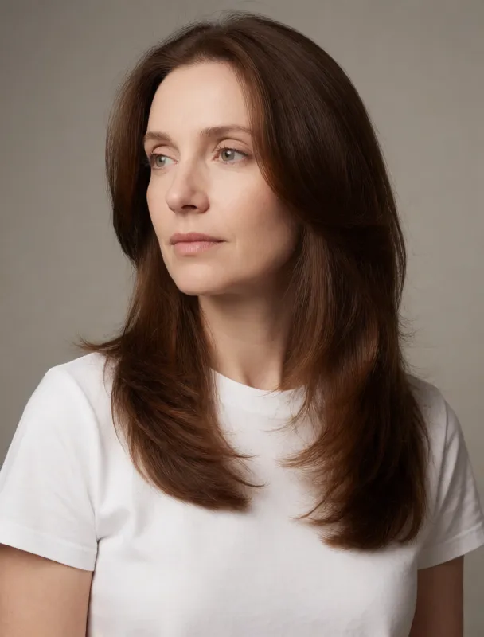
krea 2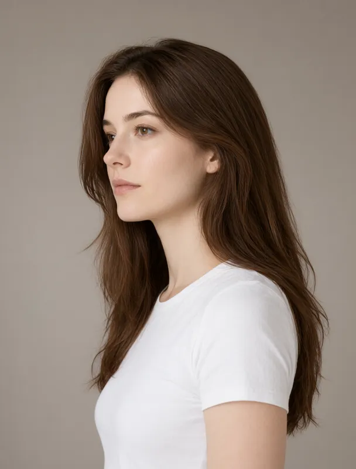
qwen image 2.1a full color studio portrait photograph in three-quarter view, framed from the shoulders up, lit by a soft diffused key light against a plain warm gray backdrop. the subject is a woman of about twenty five. she has pale ivory skin. her hair is chestnut brown, long blowout layers. she wears a plain white crew-neck t-shirt. she is turned three quarters toward the left side of the frame and gazes off to the left side of the frame, away from the camera.
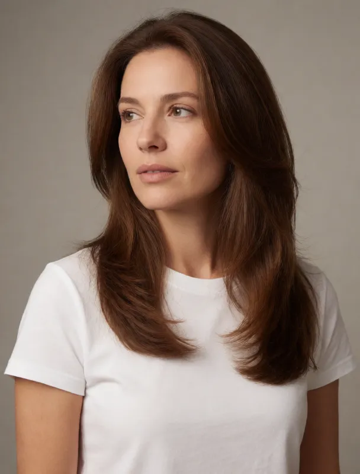
krea 2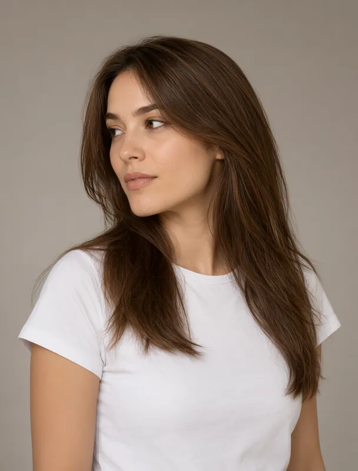
qwen image 2.1a full color studio portrait photograph in three-quarter view, framed from the shoulders up, lit by a soft diffused key light against a plain warm gray backdrop. the subject is a woman of about twenty five. she has light neutral beige skin. her hair is chestnut brown, long blowout layers. she wears a plain white crew-neck t-shirt. she is turned three quarters toward the left side of the frame and gazes off to the left side of the frame, away from the camera.
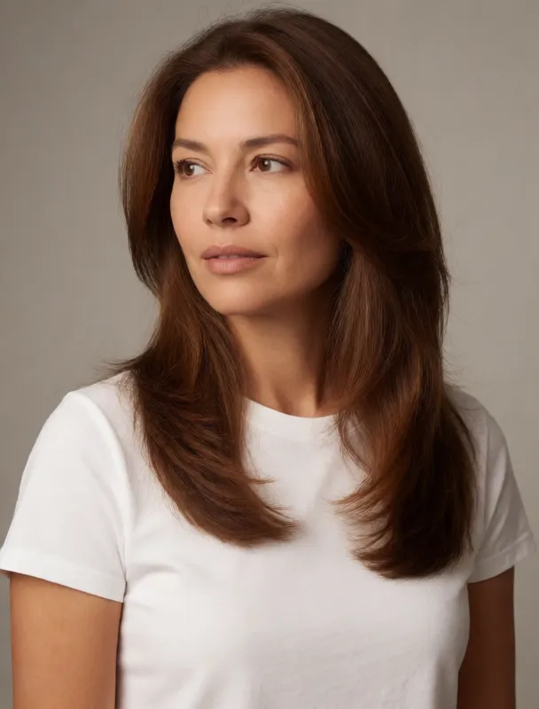
krea 2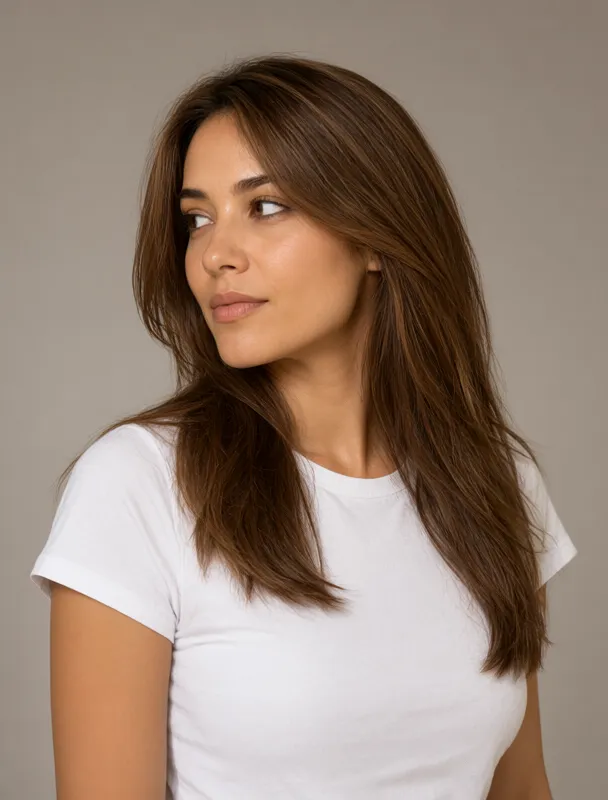
qwen image 2.1a full color studio portrait photograph in three-quarter view, framed from the shoulders up, lit by a soft diffused key light against a plain warm gray backdrop. the subject is a woman of about twenty five. she has warm honey-beige skin. her hair is chestnut brown, long blowout layers. she wears a plain white crew-neck t-shirt. she is turned three quarters toward the left side of the frame and gazes off to the left side of the frame, away from the camera.
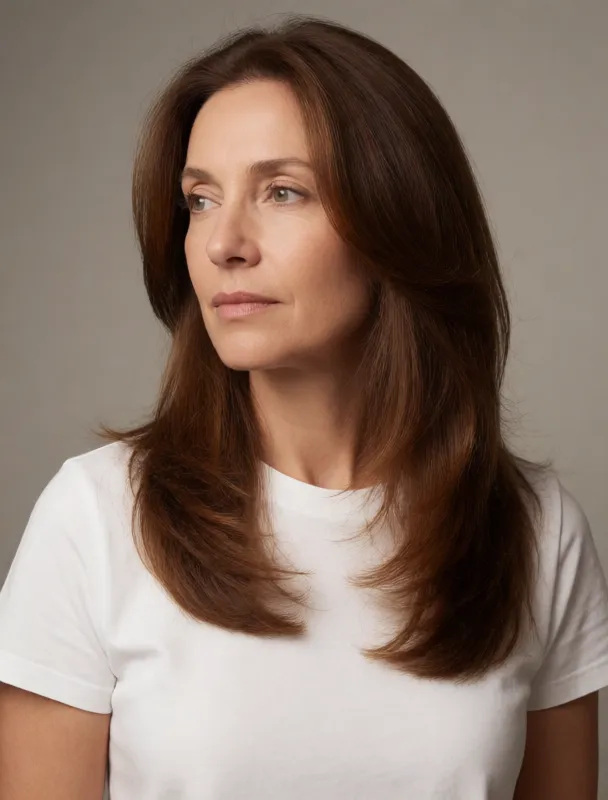
krea 2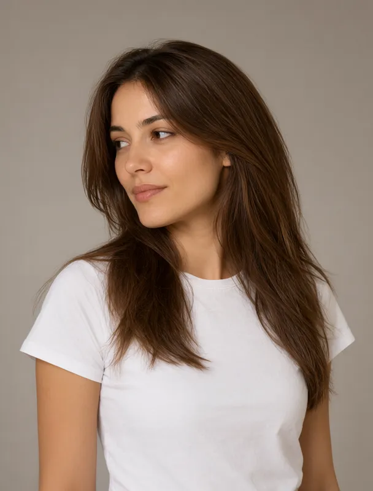
qwen image 2.1a full color studio portrait photograph in three-quarter view, framed from the shoulders up, lit by a soft diffused key light against a plain warm gray backdrop. the subject is a woman of about twenty five. she has wheatish skin. her hair is chestnut brown, long blowout layers. she wears a plain white crew-neck t-shirt. she is turned three quarters toward the left side of the frame and gazes off to the left side of the frame, away from the camera.
a full color studio portrait photograph in three-quarter view, framed from the shoulders up, lit by a soft diffused key light against a plain warm gray backdrop. the subject is a woman of about twenty five. she has dusky brown skin. her hair is chestnut brown, long blowout layers. she wears a plain white crew-neck t-shirt. she is turned three quarters toward the left side of the frame and gazes off to the left side of the frame, away from the camera.
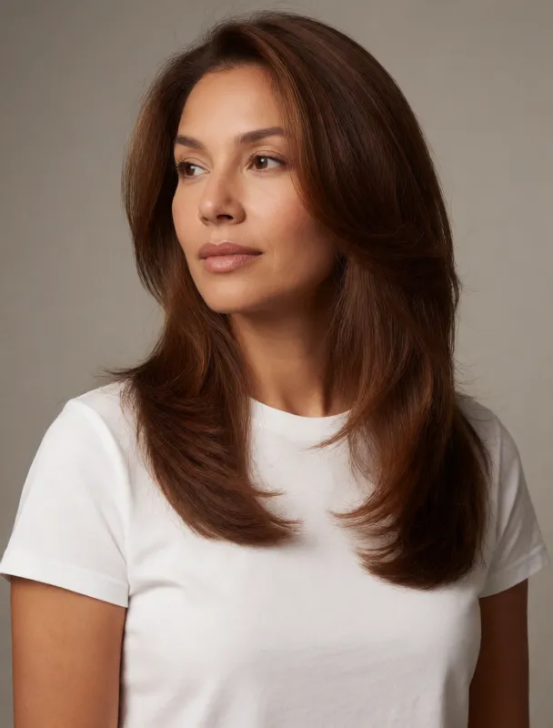
krea 2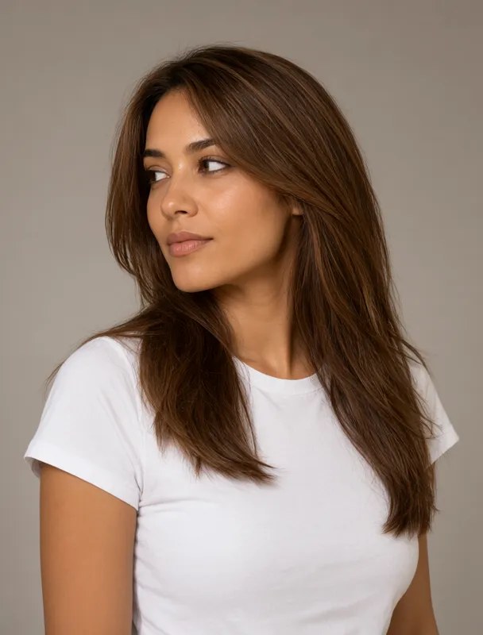
qwen image 2.1a full color studio portrait photograph in three-quarter view, framed from the shoulders up, lit by a soft diffused key light against a plain warm gray backdrop. the subject is a woman of about twenty five. she has warm caramel skin. her hair is chestnut brown, long blowout layers. she wears a plain white crew-neck t-shirt. she is turned three quarters toward the left side of the frame and gazes off to the left side of the frame, away from the camera.
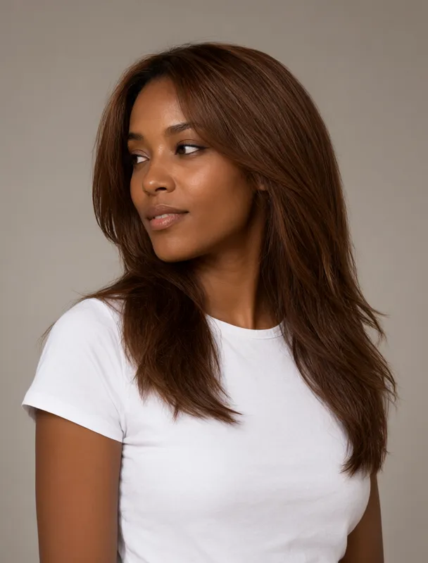
qwen image 2.1a full color studio portrait photograph in three-quarter view, framed from the shoulders up, lit by a soft diffused key light against a plain warm gray backdrop. the subject is a woman of about twenty five. she has rich mahogany skin. her hair is chestnut brown, long blowout layers. she wears a plain white crew-neck t-shirt. she is turned three quarters toward the left side of the frame and gazes off to the left side of the frame, away from the camera.
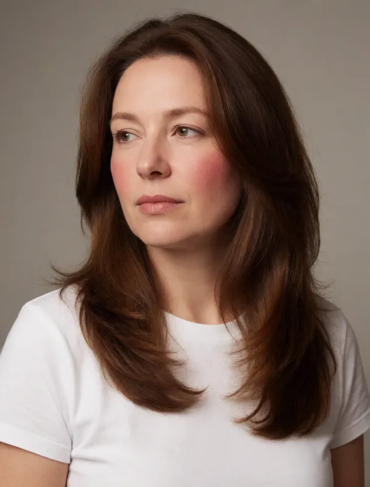
krea 2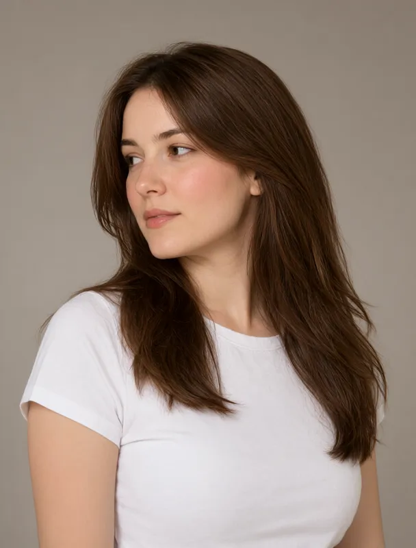
qwen image 2.1a full color studio portrait photograph in three-quarter view, framed from the shoulders up, lit by a soft diffused key light against a plain warm gray backdrop. the subject is a woman of about twenty five. she has fair skin with rosy cheeks. her hair is chestnut brown, long blowout layers. she wears a plain white crew-neck t-shirt. she is turned three quarters toward the left side of the frame and gazes off to the left side of the frame, away from the camera.
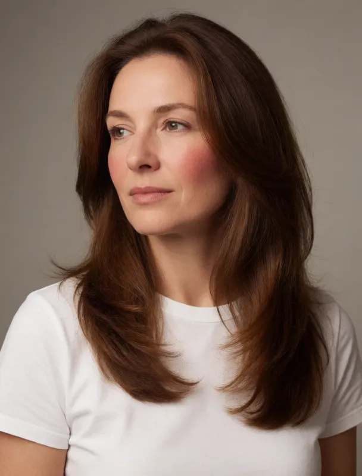
krea 2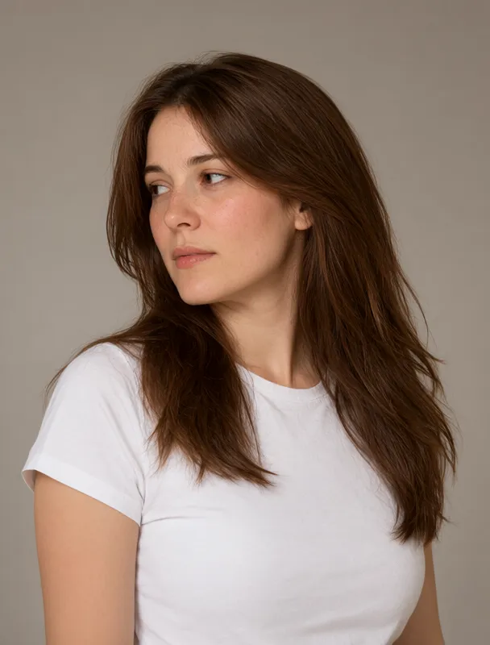
qwen image 2.1a full color studio portrait photograph in three-quarter view, framed from the shoulders up, lit by a soft diffused key light against a plain warm gray backdrop. the subject is a woman of about twenty five. she has wind-reddened cheeks. her hair is chestnut brown, long blowout layers. she wears a plain white crew-neck t-shirt. she is turned three quarters toward the left side of the frame and gazes off to the left side of the frame, away from the camera.
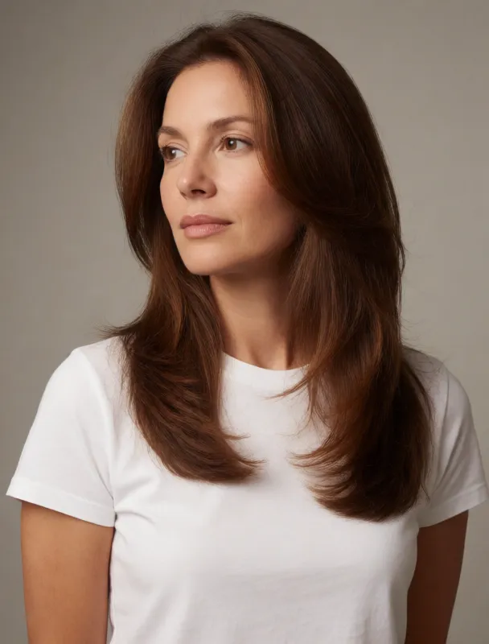
krea 2a full color studio portrait photograph in three-quarter view, framed from the shoulders up, lit by a soft diffused key light against a plain warm gray backdrop. the subject is a woman of about twenty five. she has sun-bronzed skin. her hair is chestnut brown, long blowout layers. she wears a plain white crew-neck t-shirt. she is turned three quarters toward the left side of the frame and gazes off to the left side of the frame, away from the camera.
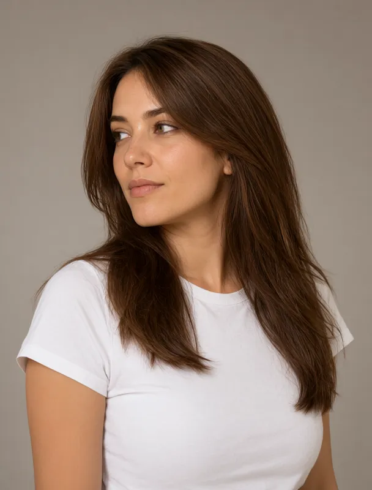
qwen image 2.1a full color studio portrait photograph in three-quarter view, framed from the shoulders up, lit by a soft diffused key light against a plain warm gray backdrop. the subject is a woman of about twenty five. she has ruddy warm beige skin. her hair is chestnut brown, long blowout layers. she wears a plain white crew-neck t-shirt. she is turned three quarters toward the left side of the frame and gazes off to the left side of the frame, away from the camera.
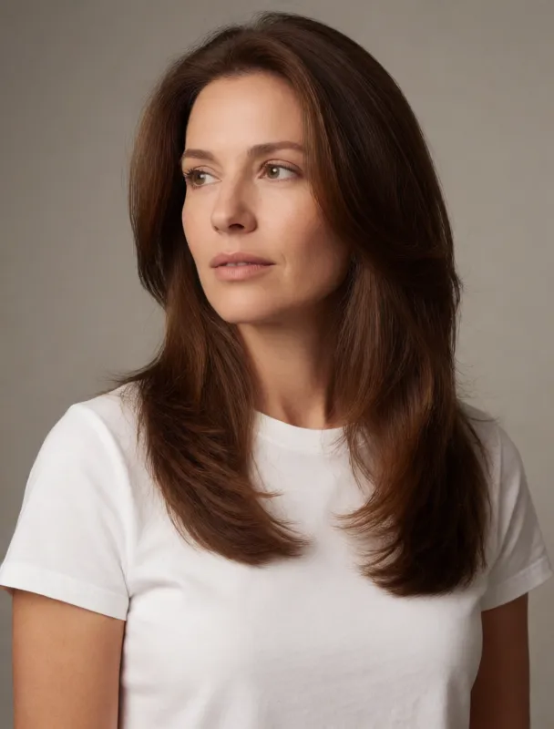
krea 2a full color studio portrait photograph in three-quarter view, framed from the shoulders up, lit by a soft diffused key light against a plain warm gray backdrop. the subject is a woman of about twenty five. she has high-altitude tanned skin. her hair is chestnut brown, long blowout layers. she wears a plain white crew-neck t-shirt. she is turned three quarters toward the left side of the frame and gazes off to the left side of the frame, away from the camera.
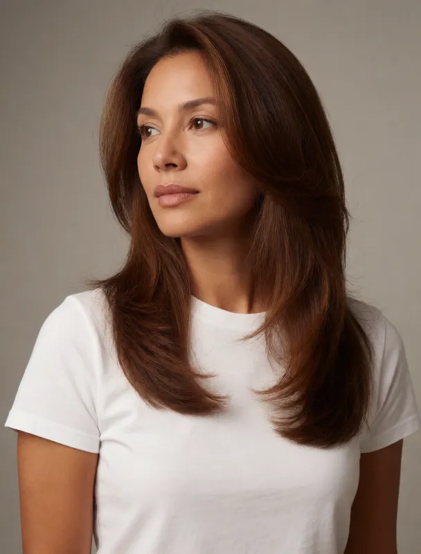
krea 2a full color studio portrait photograph in three-quarter view, framed from the shoulders up, lit by a soft diffused key light against a plain warm gray backdrop. the subject is a woman of about twenty five. she has warm tan skin. her hair is chestnut brown, long blowout layers. she wears a plain white crew-neck t-shirt. she is turned three quarters toward the left side of the frame and gazes off to the left side of the frame, away from the camera.
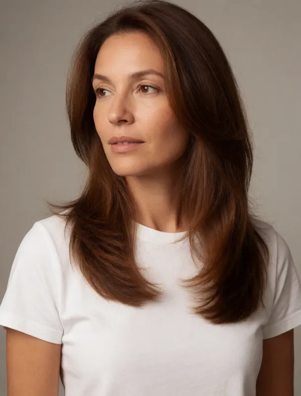
krea 2a full color studio portrait photograph in three-quarter view, framed from the shoulders up, lit by a soft diffused key light against a plain warm gray backdrop. the subject is a woman of about twenty five. she has sun-kissed golden-brown skin. her hair is chestnut brown, long blowout layers. she wears a plain white crew-neck t-shirt. she is turned three quarters toward the left side of the frame and gazes off to the left side of the frame, away from the camera.
a full color studio portrait photograph in three-quarter view, framed from the shoulders up, lit by a soft diffused key light against a plain warm gray backdrop. the subject is a woman of about twenty five. she has light honey skin. her hair is chestnut brown, long blowout layers. she wears a plain white crew-neck t-shirt. she is turned three quarters toward the left side of the frame and gazes off to the left side of the frame, away from the camera.
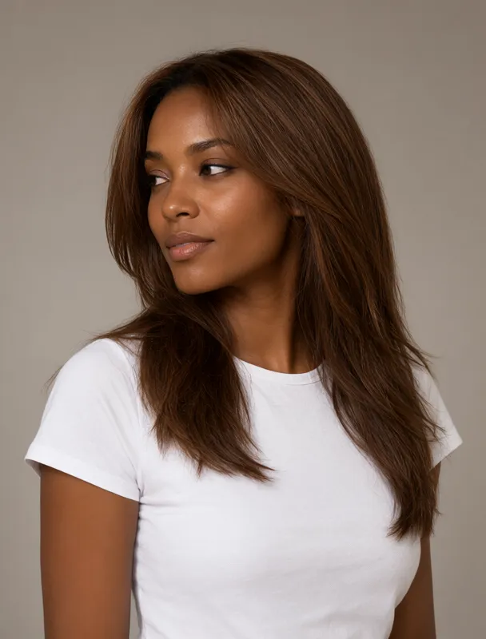
qwen image 2.1a full color studio portrait photograph in three-quarter view, framed from the shoulders up, lit by a soft diffused key light against a plain warm gray backdrop. the subject is a woman of about twenty five. she has deep caramel skin. her hair is chestnut brown, long blowout layers. she wears a plain white crew-neck t-shirt. she is turned three quarters toward the left side of the frame and gazes off to the left side of the frame, away from the camera.
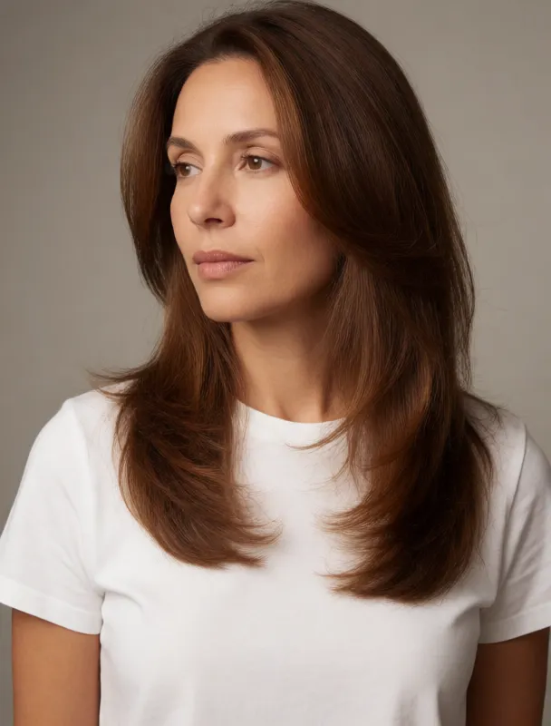
krea 2a full color studio portrait photograph in three-quarter view, framed from the shoulders up, lit by a soft diffused key light against a plain warm gray backdrop. the subject is a woman of about twenty five. she has olive-golden skin. her hair is chestnut brown, long blowout layers. she wears a plain white crew-neck t-shirt. she is turned three quarters toward the left side of the frame and gazes off to the left side of the frame, away from the camera.
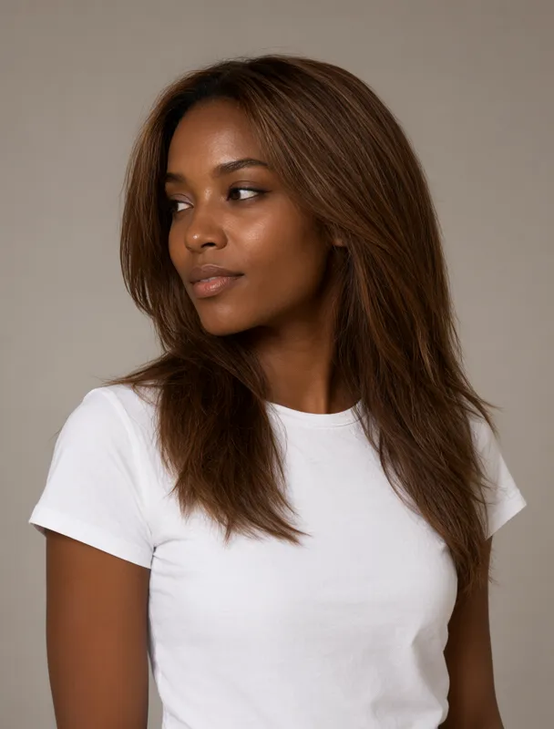
qwen image 2.1a full color studio portrait photograph in three-quarter view, framed from the shoulders up, lit by a soft diffused key light against a plain warm gray backdrop. the subject is a woman of about twenty five. she has deep bronze skin. her hair is chestnut brown, long blowout layers. she wears a plain white crew-neck t-shirt. she is turned three quarters toward the left side of the frame and gazes off to the left side of the frame, away from the camera.
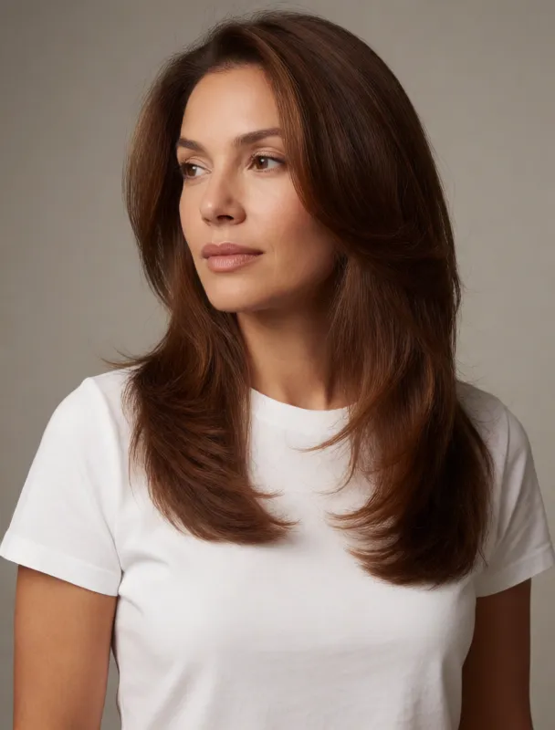
krea 2a full color studio portrait photograph in three-quarter view, framed from the shoulders up, lit by a soft diffused key light against a plain warm gray backdrop. the subject is a woman of about twenty five. she has warm cocoa skin. her hair is chestnut brown, long blowout layers. she wears a plain white crew-neck t-shirt. she is turned three quarters toward the left side of the frame and gazes off to the left side of the frame, away from the camera.
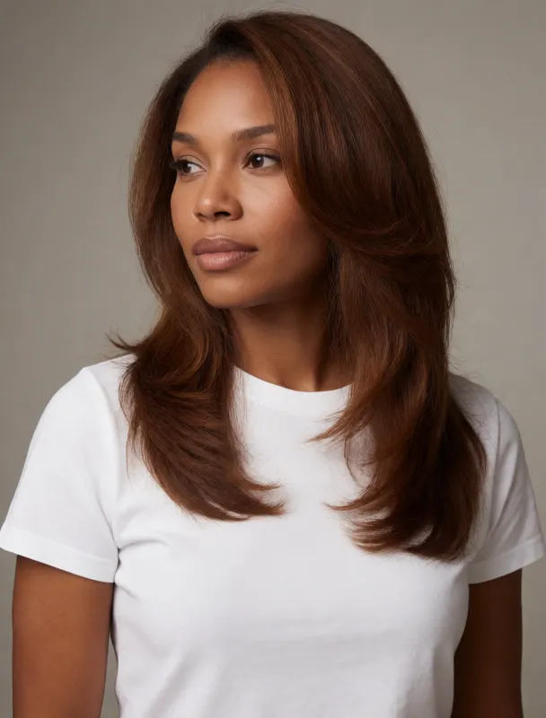
krea 2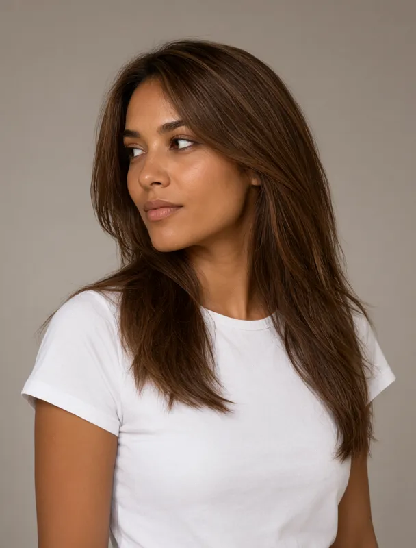
qwen image 2.1a full color studio portrait photograph in three-quarter view, framed from the shoulders up, lit by a soft diffused key light against a plain warm gray backdrop. the subject is a woman of about twenty five. she has sun-darkened brown skin. her hair is chestnut brown, long blowout layers. she wears a plain white crew-neck t-shirt. she is turned three quarters toward the left side of the frame and gazes off to the left side of the frame, away from the camera.
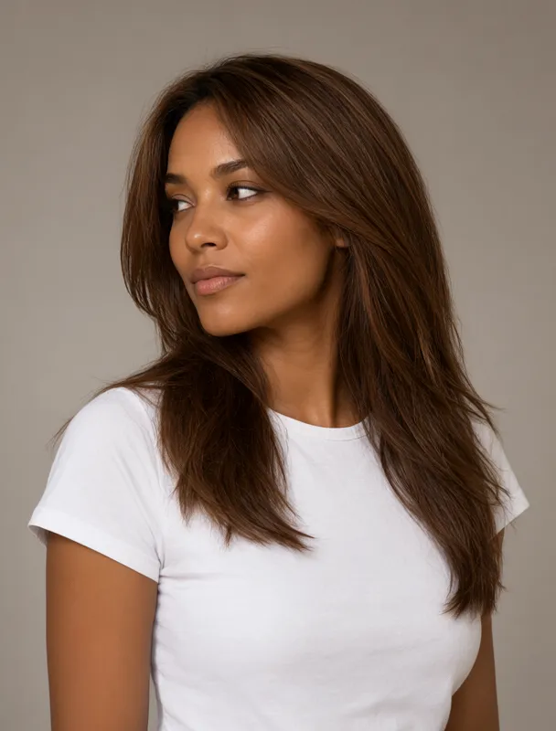
qwen image 2.1a full color studio portrait photograph in three-quarter view, framed from the shoulders up, lit by a soft diffused key light against a plain warm gray backdrop. the subject is a woman of about twenty five. she has rich umber skin. her hair is chestnut brown, long blowout layers. she wears a plain white crew-neck t-shirt. she is turned three quarters toward the left side of the frame and gazes off to the left side of the frame, away from the camera.
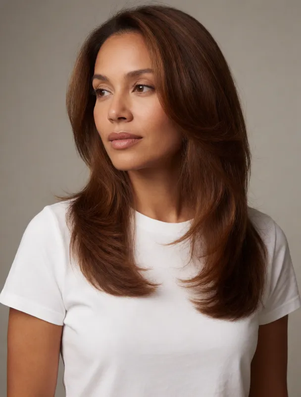
krea 2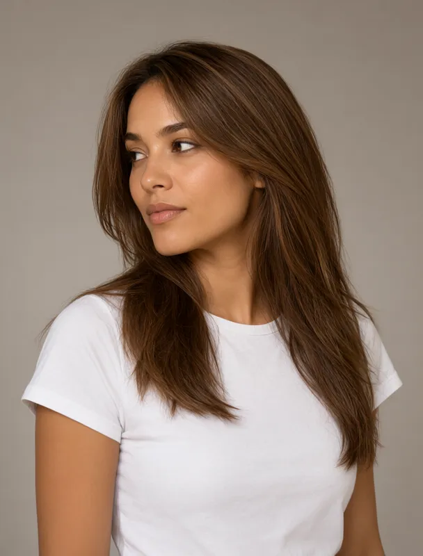
qwen image 2.1a full color studio portrait photograph in three-quarter view, framed from the shoulders up, lit by a soft diffused key light against a plain warm gray backdrop. the subject is a woman of about twenty five. she has honey-brown skin. her hair is chestnut brown, long blowout layers. she wears a plain white crew-neck t-shirt. she is turned three quarters toward the left side of the frame and gazes off to the left side of the frame, away from the camera.
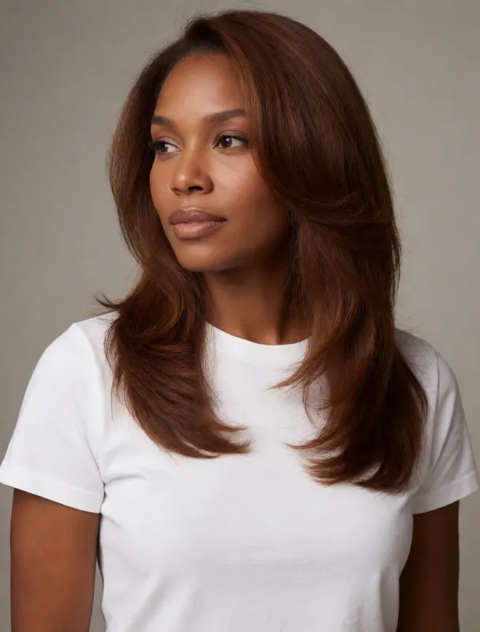
krea 2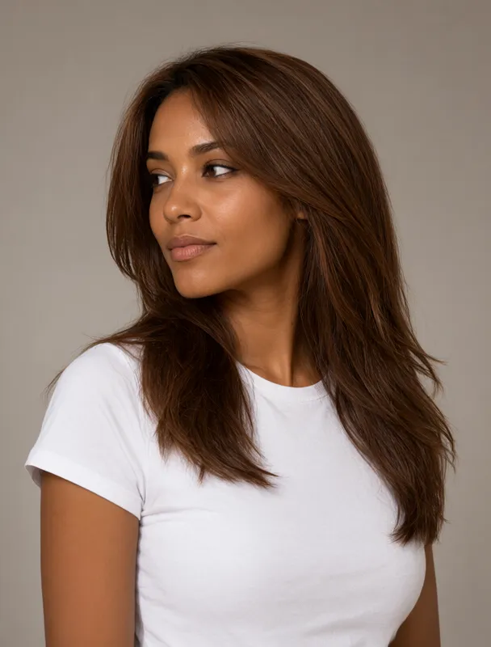
qwen image 2.1a full color studio portrait photograph in three-quarter view, framed from the shoulders up, lit by a soft diffused key light against a plain warm gray backdrop. the subject is a woman of about twenty five. she has rich chestnut-brown skin. her hair is chestnut brown, long blowout layers. she wears a plain white crew-neck t-shirt. she is turned three quarters toward the left side of the frame and gazes off to the left side of the frame, away from the camera.
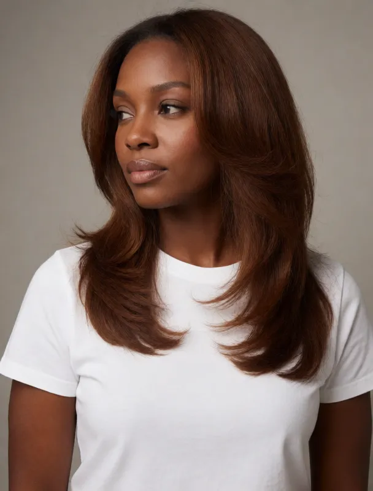
krea 2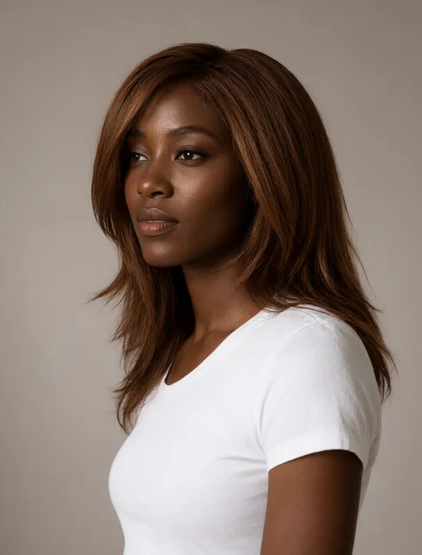
qwen image 2.1a full color studio portrait photograph in three-quarter view, framed from the shoulders up, lit by a soft diffused key light against a plain warm gray backdrop. the subject is a woman of about twenty five. she has dark ebony skin. her hair is chestnut brown, long blowout layers. she wears a plain white crew-neck t-shirt. she is turned three quarters toward the left side of the frame and gazes off to the left side of the frame, away from the camera.
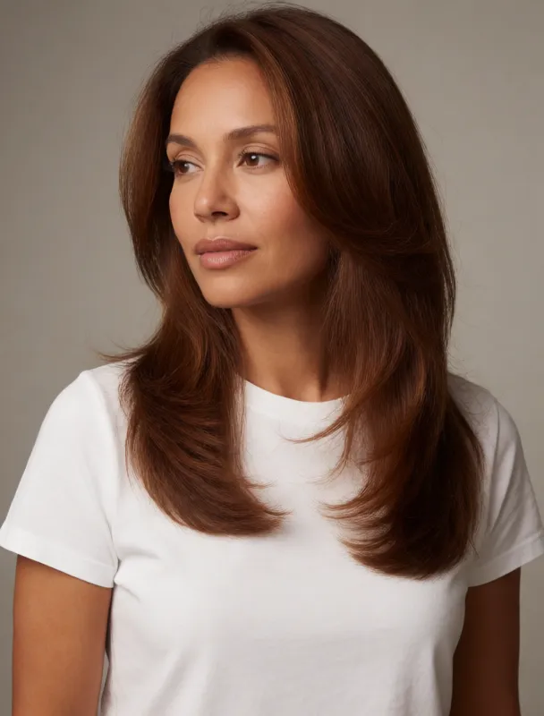
krea 2a full color studio portrait photograph in three-quarter view, framed from the shoulders up, lit by a soft diffused key light against a plain warm gray backdrop. the subject is a woman of about twenty five. she has warm copper-brown skin. her hair is chestnut brown, long blowout layers. she wears a plain white crew-neck t-shirt. she is turned three quarters toward the left side of the frame and gazes off to the left side of the frame, away from the camera.
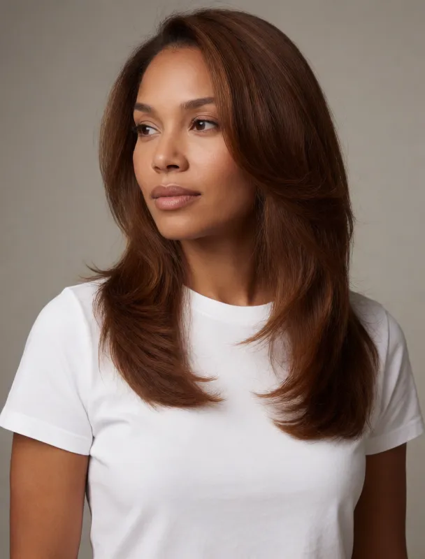
krea 2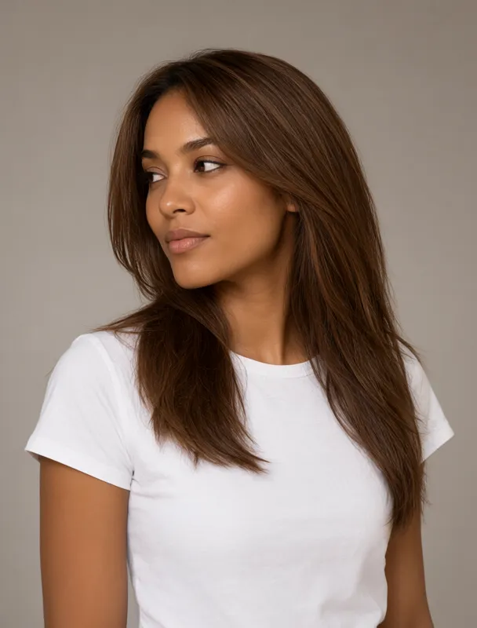
qwen image 2.1a full color studio portrait photograph in three-quarter view, framed from the shoulders up, lit by a soft diffused key light against a plain warm gray backdrop. the subject is a woman of about twenty five. she has smooth coffee-brown skin. her hair is chestnut brown, long blowout layers. she wears a plain white crew-neck t-shirt. she is turned three quarters toward the left side of the frame and gazes off to the left side of the frame, away from the camera.
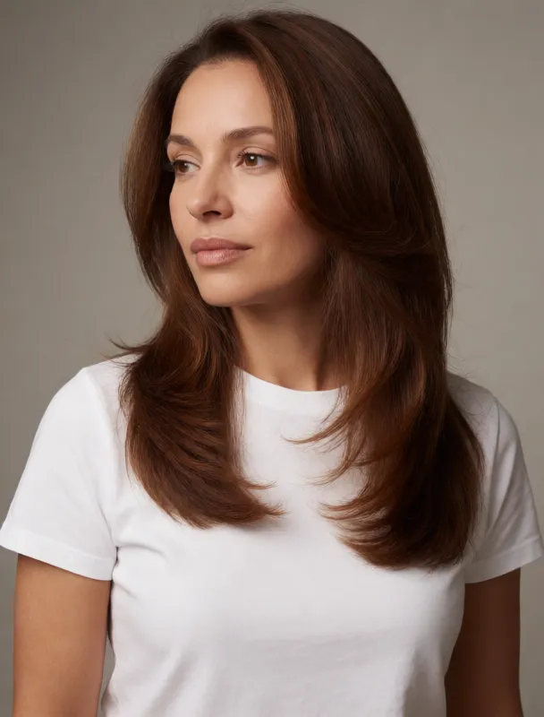
krea 2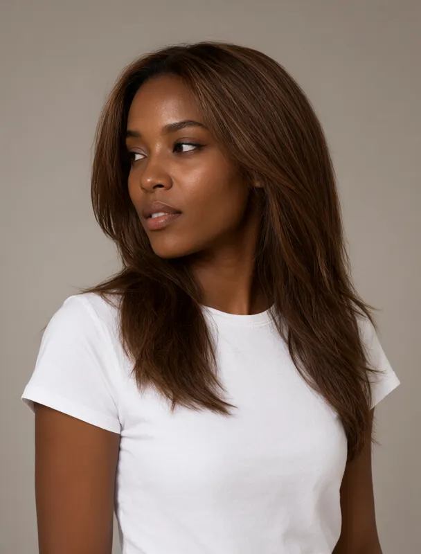
qwen image 2.1a full color studio portrait photograph in three-quarter view, framed from the shoulders up, lit by a soft diffused key light against a plain warm gray backdrop. the subject is a woman of about twenty five. she has deep walnut skin. her hair is chestnut brown, long blowout layers. she wears a plain white crew-neck t-shirt. she is turned three quarters toward the left side of the frame and gazes off to the left side of the frame, away from the camera.
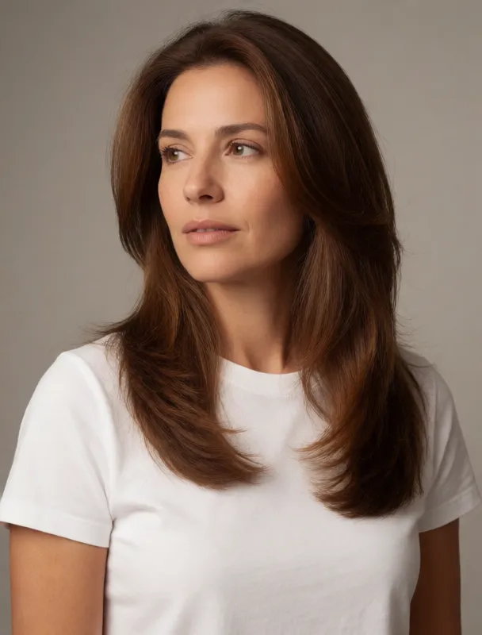
krea 2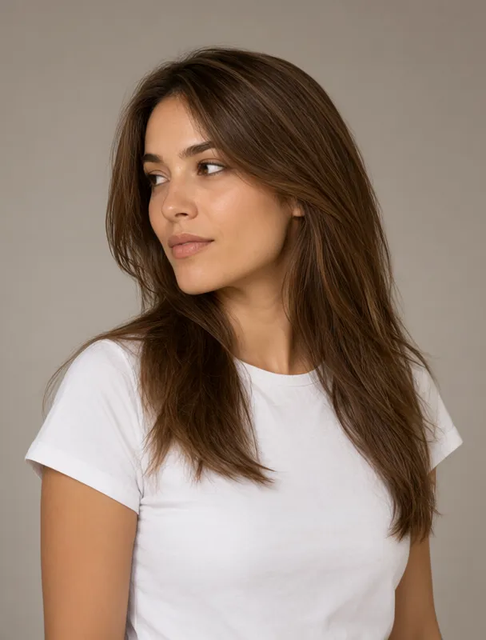
qwen image 2.1a full color studio portrait photograph in three-quarter view, framed from the shoulders up, lit by a soft diffused key light against a plain warm gray backdrop. the subject is a woman of about twenty five. she has sandy olive skin. her hair is chestnut brown, long blowout layers. she wears a plain white crew-neck t-shirt. she is turned three quarters toward the left side of the frame and gazes off to the left side of the frame, away from the camera.
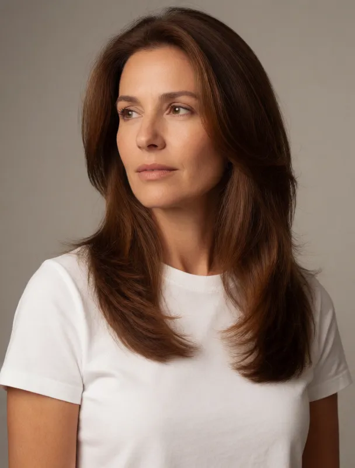
krea 2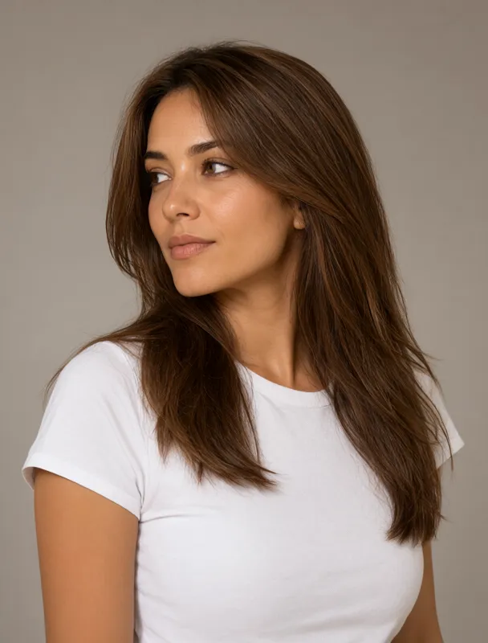
qwen image 2.1a full color studio portrait photograph in three-quarter view, framed from the shoulders up, lit by a soft diffused key light against a plain warm gray backdrop. the subject is a woman of about twenty five. she has sun-warmed tawny skin. her hair is chestnut brown, long blowout layers. she wears a plain white crew-neck t-shirt. she is turned three quarters toward the left side of the frame and gazes off to the left side of the frame, away from the camera.
a full color studio portrait photograph in three-quarter view, framed from the shoulders up, lit by a soft diffused key light against a plain warm gray backdrop. the subject is a woman of about twenty five. she has light caramel skin. her hair is chestnut brown, long blowout layers. she wears a plain white crew-neck t-shirt. she is turned three quarters toward the left side of the frame and gazes off to the left side of the frame, away from the camera.
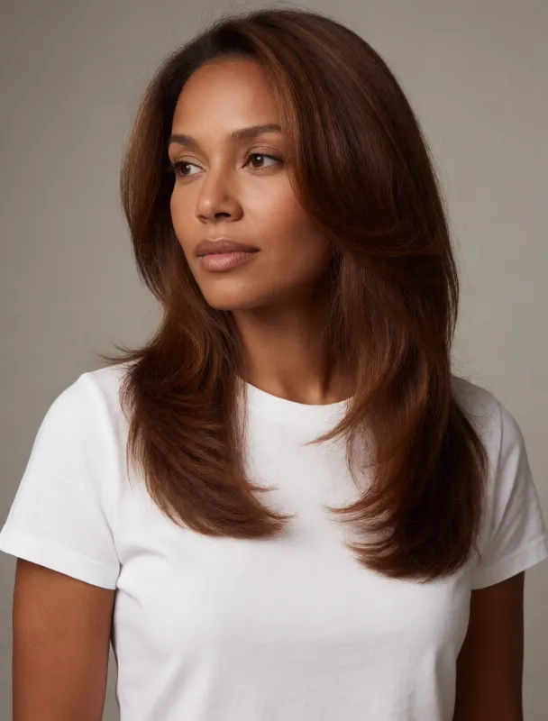
krea 2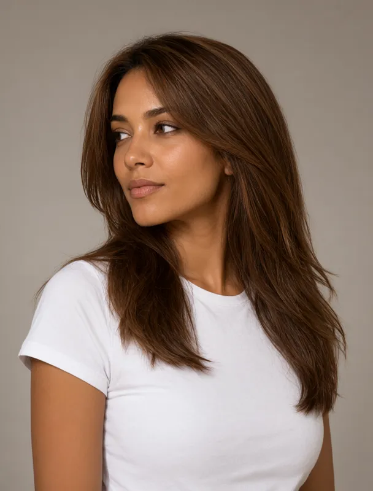
qwen image 2.1a full color studio portrait photograph in three-quarter view, framed from the shoulders up, lit by a soft diffused key light against a plain warm gray backdrop. the subject is a woman of about twenty five. she has rich tawny-brown skin. her hair is chestnut brown, long blowout layers. she wears a plain white crew-neck t-shirt. she is turned three quarters toward the left side of the frame and gazes off to the left side of the frame, away from the camera.
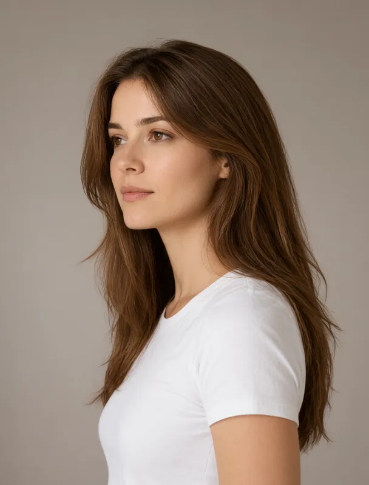
qwen image 2.1a full color studio portrait photograph in three-quarter view, framed from the shoulders up, lit by a soft diffused key light against a plain warm gray backdrop. the subject is a woman of about twenty five. she has pale honey skin. her hair is chestnut brown, long blowout layers. she wears a plain white crew-neck t-shirt. she is turned three quarters toward the left side of the frame and gazes off to the left side of the frame, away from the camera.
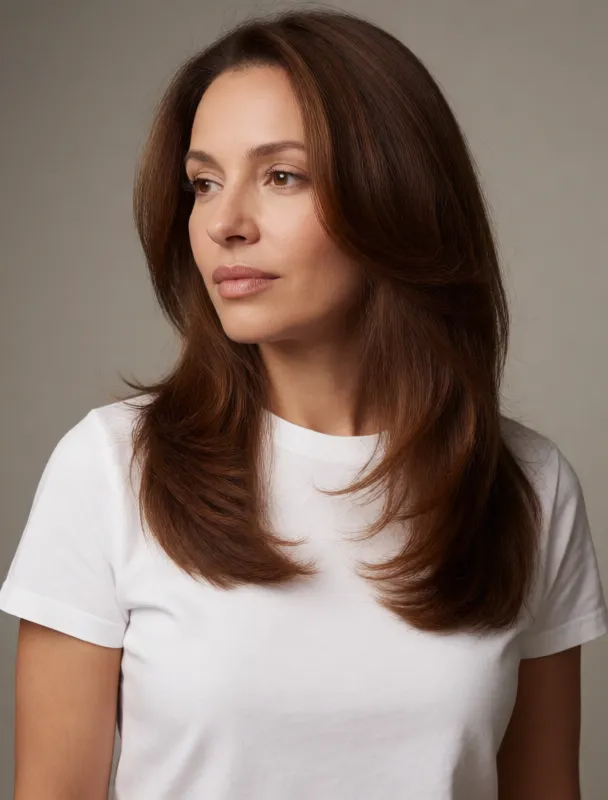
krea 2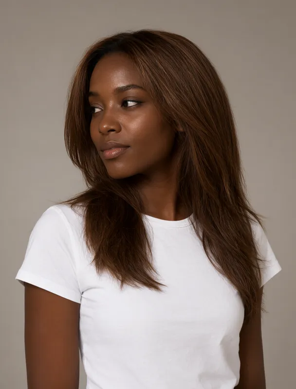
qwen image 2.1a full color studio portrait photograph in three-quarter view, framed from the shoulders up, lit by a soft diffused key light against a plain warm gray backdrop. the subject is a woman of about twenty five. she has deep espresso skin. her hair is chestnut brown, long blowout layers. she wears a plain white crew-neck t-shirt. she is turned three quarters toward the left side of the frame and gazes off to the left side of the frame, away from the camera.
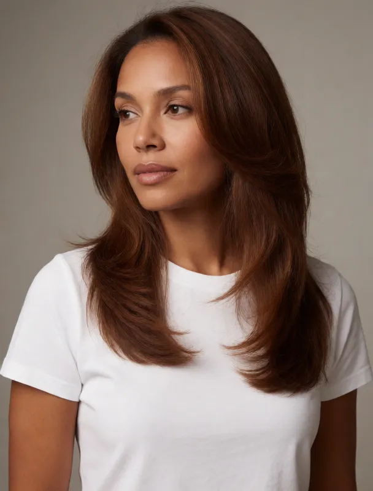
krea 2a full color studio portrait photograph in three-quarter view, framed from the shoulders up, lit by a soft diffused key light against a plain warm gray backdrop. the subject is a woman of about twenty five. she has warm mocha skin. her hair is chestnut brown, long blowout layers. she wears a plain white crew-neck t-shirt. she is turned three quarters toward the left side of the frame and gazes off to the left side of the frame, away from the camera.
a full color studio portrait photograph in three-quarter view, framed from the shoulders up, lit by a soft diffused key light against a plain warm gray backdrop. the subject is a woman of about twenty five. she has dark chocolate skin. her hair is chestnut brown, long blowout layers. she wears a plain white crew-neck t-shirt. she is turned three quarters toward the left side of the frame and gazes off to the left side of the frame, away from the camera.
a full color studio portrait photograph in three-quarter view, framed from the shoulders up, lit by a soft diffused key light against a plain warm gray backdrop. the subject is a woman of about twenty five. she has glowing bronze-brown skin. her hair is chestnut brown, long blowout layers. she wears a plain white crew-neck t-shirt. she is turned three quarters toward the left side of the frame and gazes off to the left side of the frame, away from the camera.
a full color studio portrait photograph in three-quarter view, framed from the shoulders up, lit by a soft diffused key light against a plain warm gray backdrop. the subject is a woman of about twenty five. she has burnished copper skin. her hair is chestnut brown, long blowout layers. she wears a plain white crew-neck t-shirt. she is turned three quarters toward the left side of the frame and gazes off to the left side of the frame, away from the camera.
a full color studio portrait photograph in three-quarter view, framed from the shoulders up, lit by a soft diffused key light against a plain warm gray backdrop. the subject is a woman of about twenty five. she has velvety deep brown skin. her hair is chestnut brown, long blowout layers. she wears a plain white crew-neck t-shirt. she is turned three quarters toward the left side of the frame and gazes off to the left side of the frame, away from the camera.
a full color studio portrait photograph in three-quarter view, framed from the shoulders up, lit by a soft diffused key light against a plain warm gray backdrop. the subject is a woman of about twenty five. she has warm russet-brown skin. her hair is chestnut brown, long blowout layers. she wears a plain white crew-neck t-shirt. she is turned three quarters toward the left side of the frame and gazes off to the left side of the frame, away from the camera.
a full color studio portrait photograph in three-quarter view, framed from the shoulders up, lit by a soft diffused key light against a plain warm gray backdrop. the subject is a woman of about twenty five. she has smooth sepia skin. her hair is chestnut brown, long blowout layers. she wears a plain white crew-neck t-shirt. she is turned three quarters toward the left side of the frame and gazes off to the left side of the frame, away from the camera.
a full color studio portrait photograph in three-quarter view, framed from the shoulders up, lit by a soft diffused key light against a plain warm gray backdrop. the subject is a woman of about twenty five. she has dark umber skin. her hair is chestnut brown, long blowout layers. she wears a plain white crew-neck t-shirt. she is turned three quarters toward the left side of the frame and gazes off to the left side of the frame, away from the camera.
a full color studio portrait photograph in three-quarter view, framed from the shoulders up, lit by a soft diffused key light against a plain warm gray backdrop. the subject is a woman of about twenty five. she has light caramel-brown skin. her hair is chestnut brown, long blowout layers. she wears a plain white crew-neck t-shirt. she is turned three quarters toward the left side of the frame and gazes off to the left side of the frame, away from the camera.
a full color studio portrait photograph in three-quarter view, framed from the shoulders up, lit by a soft diffused key light against a plain warm gray backdrop. the subject is a woman of about twenty five. she has golden caramel skin. her hair is chestnut brown, long blowout layers. she wears a plain white crew-neck t-shirt. she is turned three quarters toward the left side of the frame and gazes off to the left side of the frame, away from the camera.
a full color studio portrait photograph in three-quarter view, framed from the shoulders up, lit by a soft diffused key light against a plain warm gray backdrop. the subject is a woman of about twenty five. she has cinnamon-brown skin. her hair is chestnut brown, long blowout layers. she wears a plain white crew-neck t-shirt. she is turned three quarters toward the left side of the frame and gazes off to the left side of the frame, away from the camera.
a full color studio portrait photograph in three-quarter view, framed from the shoulders up, lit by a soft diffused key light against a plain warm gray backdrop. the subject is a woman of about twenty five. she has rich molasses skin. her hair is chestnut brown, long blowout layers. she wears a plain white crew-neck t-shirt. she is turned three quarters toward the left side of the frame and gazes off to the left side of the frame, away from the camera.
a full color studio portrait photograph in three-quarter view, framed from the shoulders up, lit by a soft diffused key light against a plain warm gray backdrop. the subject is a woman of about twenty five. she has sun-kissed tan skin. her hair is chestnut brown, long blowout layers. she wears a plain white crew-neck t-shirt. she is turned three quarters toward the left side of the frame and gazes off to the left side of the frame, away from the camera.
a full color studio portrait photograph in three-quarter view, framed from the shoulders up, lit by a soft diffused key light against a plain warm gray backdrop. the subject is a woman of about twenty five. she has light café-au-lait skin. her hair is chestnut brown, long blowout layers. she wears a plain white crew-neck t-shirt. she is turned three quarters toward the left side of the frame and gazes off to the left side of the frame, away from the camera.
a full color studio portrait photograph in three-quarter view, framed from the shoulders up, lit by a soft diffused key light against a plain warm gray backdrop. the subject is a woman of about twenty five. she has warm copper skin. her hair is chestnut brown, long blowout layers. she wears a plain white crew-neck t-shirt. she is turned three quarters toward the left side of the frame and gazes off to the left side of the frame, away from the camera.
a full color studio portrait photograph in three-quarter view, framed from the shoulders up, lit by a soft diffused key light against a plain warm gray backdrop. the subject is a woman of about twenty five. she has rosy fair skin. her hair is chestnut brown, long blowout layers. she wears a plain white crew-neck t-shirt. she is turned three quarters toward the left side of the frame and gazes off to the left side of the frame, away from the camera.
a full color studio portrait photograph in three-quarter view, framed from the shoulders up, lit by a soft diffused key light against a plain warm gray backdrop. the subject is a woman of about twenty five. she has sun-browned skin. her hair is chestnut brown, long blowout layers. she wears a plain white crew-neck t-shirt. she is turned three quarters toward the left side of the frame and gazes off to the left side of the frame, away from the camera.
a full color studio portrait photograph in three-quarter view, framed from the shoulders up, lit by a soft diffused key light against a plain warm gray backdrop. the subject is a woman of about twenty five. she has pink-toned fair skin. her hair is chestnut brown, long blowout layers. she wears a plain white crew-neck t-shirt. she is turned three quarters toward the left side of the frame and gazes off to the left side of the frame, away from the camera.
a full color studio portrait photograph in three-quarter view, framed from the shoulders up, lit by a soft diffused key light against a plain warm gray backdrop. the subject is a woman of about twenty five. she has warm terracotta-brown skin. her hair is chestnut brown, long blowout layers. she wears a plain white crew-neck t-shirt. she is turned three quarters toward the left side of the frame and gazes off to the left side of the frame, away from the camera.
a full color studio portrait photograph in three-quarter view, framed from the shoulders up, lit by a soft diffused key light against a plain warm gray backdrop. the subject is a woman of about twenty five. she has deep copper-bronze skin. her hair is chestnut brown, long blowout layers. she wears a plain white crew-neck t-shirt. she is turned three quarters toward the left side of the frame and gazes off to the left side of the frame, away from the camera.
a full color studio portrait photograph in three-quarter view, framed from the shoulders up, lit by a soft diffused key light against a plain warm gray backdrop. the subject is a woman of about twenty five. she has sun-weathered brown skin. her hair is chestnut brown, long blowout layers. she wears a plain white crew-neck t-shirt. she is turned three quarters toward the left side of the frame and gazes off to the left side of the frame, away from the camera.
a full color studio portrait photograph in three-quarter view, framed from the shoulders up, lit by a soft diffused key light against a plain warm gray backdrop. the subject is a woman of about twenty five. she has golden-olive skin. her hair is chestnut brown, long blowout layers. she wears a plain white crew-neck t-shirt. she is turned three quarters toward the left side of the frame and gazes off to the left side of the frame, away from the camera.
a full color studio portrait photograph in three-quarter view, framed from the shoulders up, lit by a soft diffused key light against a plain warm gray backdrop. the subject is a woman of about twenty five. she has rich cacao skin. her hair is chestnut brown, long blowout layers. she wears a plain white crew-neck t-shirt. she is turned three quarters toward the left side of the frame and gazes off to the left side of the frame, away from the camera.
a full color studio portrait photograph in three-quarter view, framed from the shoulders up, lit by a soft diffused key light against a plain warm gray backdrop. the subject is a woman of about twenty five. she has light peach skin. her hair is chestnut brown, long blowout layers. she wears a plain white crew-neck t-shirt. she is turned three quarters toward the left side of the frame and gazes off to the left side of the frame, away from the camera.
a full color studio portrait photograph in three-quarter view, framed from the shoulders up, lit by a soft diffused key light against a plain warm gray backdrop. the subject is a woman of about twenty five. she has pale freckled skin. her hair is chestnut brown, long blowout layers. she wears a plain white crew-neck t-shirt. she is turned three quarters toward the left side of the frame and gazes off to the left side of the frame, away from the camera.
a full color studio portrait photograph in three-quarter view, framed from the shoulders up, lit by a soft diffused key light against a plain warm gray backdrop. the subject is a woman of about twenty five. she has peaches-and-cream skin. her hair is chestnut brown, long blowout layers. she wears a plain white crew-neck t-shirt. she is turned three quarters toward the left side of the frame and gazes off to the left side of the frame, away from the camera.
a full color studio portrait photograph in three-quarter view, framed from the shoulders up, lit by a soft diffused key light against a plain warm gray backdrop. the subject is a woman of about twenty five. she has cool alabaster skin. her hair is chestnut brown, long blowout layers. she wears a plain white crew-neck t-shirt. she is turned three quarters toward the left side of the frame and gazes off to the left side of the frame, away from the camera.
a full color studio portrait photograph in three-quarter view, framed from the shoulders up, lit by a soft diffused key light against a plain warm gray backdrop. the subject is a woman of about twenty five. she has ruddy windswept complexion. her hair is chestnut brown, long blowout layers. she wears a plain white crew-neck t-shirt. she is turned three quarters toward the left side of the frame and gazes off to the left side of the frame, away from the camera.
a full color studio portrait photograph in three-quarter view, framed from the shoulders up, lit by a soft diffused key light against a plain warm gray backdrop. the subject is a woman of about twenty five. she has milky pale skin. her hair is chestnut brown, long blowout layers. she wears a plain white crew-neck t-shirt. she is turned three quarters toward the left side of the frame and gazes off to the left side of the frame, away from the camera.
a full color studio portrait photograph in three-quarter view, framed from the shoulders up, lit by a soft diffused key light against a plain warm gray backdrop. the subject is a woman of about twenty five. she has translucent pale skin. her hair is chestnut brown, long blowout layers. she wears a plain white crew-neck t-shirt. she is turned three quarters toward the left side of the frame and gazes off to the left side of the frame, away from the camera.
a full color studio portrait photograph in three-quarter view, framed from the shoulders up, lit by a soft diffused key light against a plain warm gray backdrop. the subject is a woman of about twenty five. she has wind-flushed fair skin. her hair is chestnut brown, long blowout layers. she wears a plain white crew-neck t-shirt. she is turned three quarters toward the left side of the frame and gazes off to the left side of the frame, away from the camera.
a full color studio portrait photograph in three-quarter view, framed from the shoulders up, lit by a soft diffused key light against a plain warm gray backdrop. the subject is a woman of about twenty five. she has warm light-beige skin. her hair is chestnut brown, long blowout layers. she wears a plain white crew-neck t-shirt. she is turned three quarters toward the left side of the frame and gazes off to the left side of the frame, away from the camera.
a full color studio portrait photograph in three-quarter view, framed from the shoulders up, lit by a soft diffused key light against a plain warm gray backdrop. the subject is a woman of about twenty five. she has creamy fair skin. her hair is chestnut brown, long blowout layers. she wears a plain white crew-neck t-shirt. she is turned three quarters toward the left side of the frame and gazes off to the left side of the frame, away from the camera.
a full color studio portrait photograph in three-quarter view, framed from the shoulders up, lit by a soft diffused key light against a plain warm gray backdrop. the subject is a woman of about twenty five. she has rosy beige skin. her hair is chestnut brown, long blowout layers. she wears a plain white crew-neck t-shirt. she is turned three quarters toward the left side of the frame and gazes off to the left side of the frame, away from the camera.
a full color studio portrait photograph in three-quarter view, framed from the shoulders up, lit by a soft diffused key light against a plain warm gray backdrop. the subject is a woman of about twenty five. she has fair skin with pink undertones. her hair is chestnut brown, long blowout layers. she wears a plain white crew-neck t-shirt. she is turned three quarters toward the left side of the frame and gazes off to the left side of the frame, away from the camera.
a full color studio portrait photograph in three-quarter view, framed from the shoulders up, lit by a soft diffused key light against a plain warm gray backdrop. the subject is a woman of about twenty five. she has light neutral skin. her hair is chestnut brown, long blowout layers. she wears a plain white crew-neck t-shirt. she is turned three quarters toward the left side of the frame and gazes off to the left side of the frame, away from the camera.
a full color studio portrait photograph in three-quarter view, framed from the shoulders up, lit by a soft diffused key light against a plain warm gray backdrop. the subject is a woman of about twenty five. she has sun-kissed olive skin. her hair is chestnut brown, long blowout layers. she wears a plain white crew-neck t-shirt. she is turned three quarters toward the left side of the frame and gazes off to the left side of the frame, away from the camera.
a full color studio portrait photograph in three-quarter view, framed from the shoulders up, lit by a soft diffused key light against a plain warm gray backdrop. the subject is a woman of about twenty five. she has deep mediterranean tan. her hair is chestnut brown, long blowout layers. she wears a plain white crew-neck t-shirt. she is turned three quarters toward the left side of the frame and gazes off to the left side of the frame, away from the camera.
a full color studio portrait photograph in three-quarter view, framed from the shoulders up, lit by a soft diffused key light against a plain warm gray backdrop. the subject is a woman of about twenty five. she has honeyed olive skin. her hair is chestnut brown, long blowout layers. she wears a plain white crew-neck t-shirt. she is turned three quarters toward the left side of the frame and gazes off to the left side of the frame, away from the camera.
a full color studio portrait photograph in three-quarter view, framed from the shoulders up, lit by a soft diffused key light against a plain warm gray backdrop. the subject is a woman of about twenty five. she has bronzed olive skin. her hair is chestnut brown, long blowout layers. she wears a plain white crew-neck t-shirt. she is turned three quarters toward the left side of the frame and gazes off to the left side of the frame, away from the camera.
a full color studio portrait photograph in three-quarter view, framed from the shoulders up, lit by a soft diffused key light against a plain warm gray backdrop. the subject is a woman of about twenty five. she has warm almond skin. her hair is chestnut brown, long blowout layers. she wears a plain white crew-neck t-shirt. she is turned three quarters toward the left side of the frame and gazes off to the left side of the frame, away from the camera.
a full color studio portrait photograph in three-quarter view, framed from the shoulders up, lit by a soft diffused key light against a plain warm gray backdrop. the subject is a woman of about twenty five. she has fair skin with cool undertones. her hair is chestnut brown, long blowout layers. she wears a plain white crew-neck t-shirt. she is turned three quarters toward the left side of the frame and gazes off to the left side of the frame, away from the camera.
a full color studio portrait photograph in three-quarter view, framed from the shoulders up, lit by a soft diffused key light against a plain warm gray backdrop. the subject is a woman of about twenty five. she has snow-pale skin. her hair is chestnut brown, long blowout layers. she wears a plain white crew-neck t-shirt. she is turned three quarters toward the left side of the frame and gazes off to the left side of the frame, away from the camera.
a full color studio portrait photograph in three-quarter view, framed from the shoulders up, lit by a soft diffused key light against a plain warm gray backdrop. the subject is a woman of about twenty five. she has rosy-cheeked fair skin. her hair is chestnut brown, long blowout layers. she wears a plain white crew-neck t-shirt. she is turned three quarters toward the left side of the frame and gazes off to the left side of the frame, away from the camera.
a full color studio portrait photograph in three-quarter view, framed from the shoulders up, lit by a soft diffused key light against a plain warm gray backdrop. the subject is a woman of about twenty five. she has warm light-olive skin. her hair is chestnut brown, long blowout layers. she wears a plain white crew-neck t-shirt. she is turned three quarters toward the left side of the frame and gazes off to the left side of the frame, away from the camera.
a full color studio portrait photograph in three-quarter view, framed from the shoulders up, lit by a soft diffused key light against a plain warm gray backdrop. the subject is a woman of about twenty five. she has warm olive-beige skin. her hair is chestnut brown, long blowout layers. she wears a plain white crew-neck t-shirt. she is turned three quarters toward the left side of the frame and gazes off to the left side of the frame, away from the camera.
a full color studio portrait photograph in three-quarter view, framed from the shoulders up, lit by a soft diffused key light against a plain warm gray backdrop. the subject is a woman of about twenty five. she has golden tan skin. her hair is chestnut brown, long blowout layers. she wears a plain white crew-neck t-shirt. she is turned three quarters toward the left side of the frame and gazes off to the left side of the frame, away from the camera.
a full color studio portrait photograph in three-quarter view, framed from the shoulders up, lit by a soft diffused key light against a plain warm gray backdrop. the subject is a woman of about twenty five. she has fair rosy olive skin. her hair is chestnut brown, long blowout layers. she wears a plain white crew-neck t-shirt. she is turned three quarters toward the left side of the frame and gazes off to the left side of the frame, away from the camera.
a full color studio portrait photograph in three-quarter view, framed from the shoulders up, lit by a soft diffused key light against a plain warm gray backdrop. the subject is a woman of about twenty five. she has sun-warmed beige skin. her hair is chestnut brown, long blowout layers. she wears a plain white crew-neck t-shirt. she is turned three quarters toward the left side of the frame and gazes off to the left side of the frame, away from the camera.
a full color close-up studio portrait photograph in three-quarter view, with the face and neck filling the frame in sharp skin detail, lit by a soft diffused key light against a plain warm gray backdrop. the subject is a mixed race woman of about twenty five with light skin. she has smooth even skin. her hair is chestnut brown, long blowout layers. she wears a plain white crew-neck t-shirt. she is turned three quarters toward the left side of the frame and gazes off to the left side of the frame, away from the camera.
a full color close-up studio portrait photograph in three-quarter view, with the face and neck filling the frame in sharp skin detail, lit by a soft diffused key light against a plain warm gray backdrop. the subject is a mixed race woman of about twenty five with light skin. she has velvety matte skin. her hair is chestnut brown, long blowout layers. she wears a plain white crew-neck t-shirt. she is turned three quarters toward the left side of the frame and gazes off to the left side of the frame, away from the camera.
a full color close-up studio portrait photograph in three-quarter view, with the face and neck filling the frame in sharp skin detail, lit by a soft diffused key light against a plain warm gray backdrop. the subject is a mixed race woman of about twenty five with light skin. she has satin-finish skin. her hair is chestnut brown, long blowout layers. she wears a plain white crew-neck t-shirt. she is turned three quarters toward the left side of the frame and gazes off to the left side of the frame, away from the camera.
a full color close-up studio portrait photograph in three-quarter view, with the face and neck filling the frame in sharp skin detail, lit by a soft diffused key light against a plain warm gray backdrop. the subject is a mixed race woman of about twenty five with light skin. she has visible fine pores. her hair is chestnut brown, long blowout layers. she wears a plain white crew-neck t-shirt. she is turned three quarters toward the left side of the frame and gazes off to the left side of the frame, away from the camera.
a full color close-up studio portrait photograph in three-quarter view, with the face and neck filling the frame in sharp skin detail, lit by a soft diffused key light against a plain warm gray backdrop. the subject is a mixed race woman of about twenty five with light skin. she has natural pores across the nose. her hair is chestnut brown, long blowout layers. she wears a plain white crew-neck t-shirt. she is turned three quarters toward the left side of the frame and gazes off to the left side of the frame, away from the camera.
a full color close-up studio portrait photograph in three-quarter view, with the face and neck filling the frame in sharp skin detail, lit by a soft diffused key light against a plain warm gray backdrop. the subject is a mixed race woman of about twenty five with light skin. she has fine peach fuzz. her hair is chestnut brown, long blowout layers. she wears a plain white crew-neck t-shirt. she is turned three quarters toward the left side of the frame and gazes off to the left side of the frame, away from the camera.
a full color close-up studio portrait photograph in three-quarter view, with the face and neck filling the frame in sharp skin detail, lit by a soft diffused key light against a plain warm gray backdrop. the subject is a mixed race woman of about twenty five with light skin. she has natural unretouched skin texture. her hair is chestnut brown, long blowout layers. she wears a plain white crew-neck t-shirt. she is turned three quarters toward the left side of the frame and gazes off to the left side of the frame, away from the camera.
a full color close-up studio portrait photograph in three-quarter view, with the face and neck filling the frame in sharp skin detail, lit by a soft diffused key light against a plain warm gray backdrop. the subject is a mixed race woman of about twenty five with light skin. she has dewy skin. her hair is chestnut brown, long blowout layers. she wears a plain white crew-neck t-shirt. she is turned three quarters toward the left side of the frame and gazes off to the left side of the frame, away from the camera.
a full color close-up studio portrait photograph in three-quarter view, with the face and neck filling the frame in sharp skin detail, lit by a soft diffused key light against a plain warm gray backdrop. the subject is a mixed race woman of about twenty five with light skin. she has luminous glowing skin. her hair is chestnut brown, long blowout layers. she wears a plain white crew-neck t-shirt. she is turned three quarters toward the left side of the frame and gazes off to the left side of the frame, away from the camera.
a full color close-up studio portrait photograph in three-quarter view, with the face and neck filling the frame in sharp skin detail, lit by a soft diffused key light against a plain warm gray backdrop. the subject is a mixed race woman of about twenty five with light skin. she has light natural sheen on the t-zone. her hair is chestnut brown, long blowout layers. she wears a plain white crew-neck t-shirt. she is turned three quarters toward the left side of the frame and gazes off to the left side of the frame, away from the camera.
a full color close-up studio portrait photograph in three-quarter view, with the face and neck filling the frame in sharp skin detail, lit by a soft diffused key light against a plain warm gray backdrop. the subject is a mixed race woman of about twenty five with light skin. she has rosy post-workout flush. her hair is chestnut brown, long blowout layers. she wears a plain white crew-neck t-shirt. she is turned three quarters toward the left side of the frame and gazes off to the left side of the frame, away from the camera.
a full color close-up studio portrait photograph in three-quarter view, with the face and neck filling the frame in sharp skin detail, lit by a soft diffused key light against a plain warm gray backdrop. the subject is a mixed race woman of about twenty five with light skin. she has light sheen of perspiration. her hair is chestnut brown, long blowout layers. she wears a plain white crew-neck t-shirt. she is turned three quarters toward the left side of the frame and gazes off to the left side of the frame, away from the camera.
a full color close-up studio portrait photograph in three-quarter view, with the face and neck filling the frame in sharp skin detail, lit by a soft diffused key light against a plain warm gray backdrop. the subject is a mixed race woman of about twenty five with light skin. she has dense freckles. her hair is chestnut brown, long blowout layers. she wears a plain white crew-neck t-shirt. she is turned three quarters toward the left side of the frame and gazes off to the left side of the frame, away from the camera.
a full color close-up studio portrait photograph in three-quarter view, with the face and neck filling the frame in sharp skin detail, lit by a soft diffused key light against a plain warm gray backdrop. the subject is a mixed race woman of about twenty five with light skin. she has light freckles. her hair is chestnut brown, long blowout layers. she wears a plain white crew-neck t-shirt. she is turned three quarters toward the left side of the frame and gazes off to the left side of the frame, away from the camera.
a full color close-up studio portrait photograph in three-quarter view, with the face and neck filling the frame in sharp skin detail, lit by a soft diffused key light against a plain warm gray backdrop. the subject is a mixed race woman of about twenty five with light skin. she has sun freckles across the nose. her hair is chestnut brown, long blowout layers. she wears a plain white crew-neck t-shirt. she is turned three quarters toward the left side of the frame and gazes off to the left side of the frame, away from the camera.
a full color close-up studio portrait photograph in three-quarter view, with the face and neck filling the frame in sharp skin detail, lit by a soft diffused key light against a plain warm gray backdrop. the subject is a mixed race woman of about twenty five with light skin. she has a single beauty mark. her hair is chestnut brown, long blowout layers. she wears a plain white crew-neck t-shirt. she is turned three quarters toward the left side of the frame and gazes off to the left side of the frame, away from the camera.
a full color close-up studio portrait photograph in three-quarter view, with the face and neck filling the frame in sharp skin detail, lit by a soft diffused key light against a plain warm gray backdrop. the subject is a mixed race woman of about twenty five with light skin. she has scattered beauty marks. her hair is chestnut brown, long blowout layers. she wears a plain white crew-neck t-shirt. she is turned three quarters toward the left side of the frame and gazes off to the left side of the frame, away from the camera.